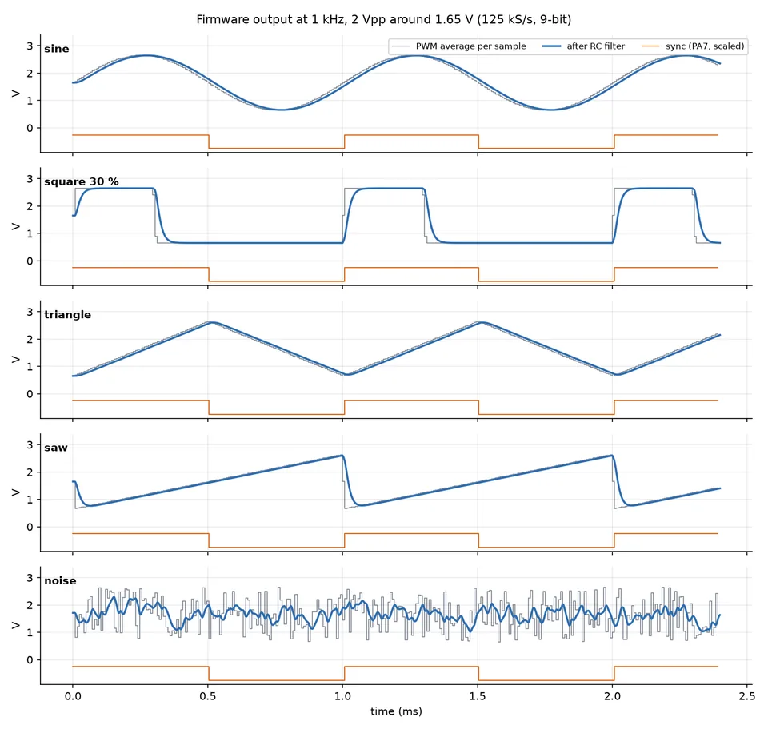
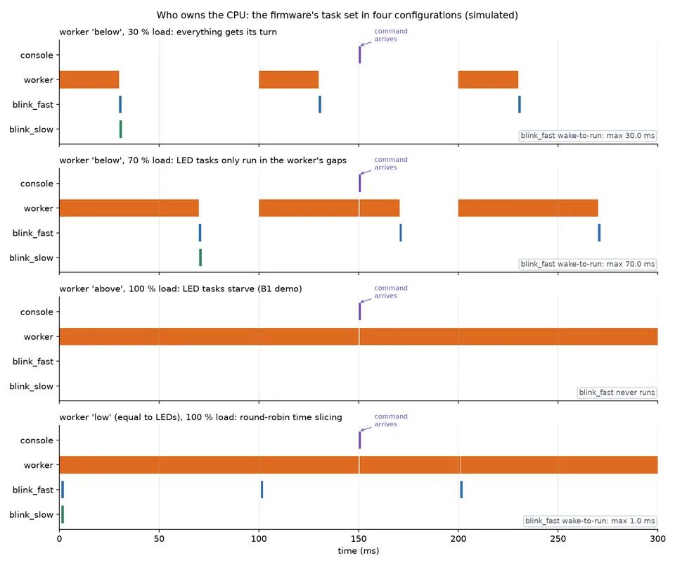

NUCLEO-L152RE · DSP
FSK Software Modem
1000-baud FSK through the DAC and ADC: NCO transmitter, sliding-correlator receiver and UART-style framing. Bit error rate matches non-coherent FSK theory.
51 host checksCode & docs →

Embedded Firmware Engineer
BLE wearables & wireless audio · Zephyr / nRF52 · STM32 · ESP32 · DSP
Visiting Faculty, Embedded Systems · Quaid-i-Azam University, Islamabad
I build production firmware for battery-powered wireless devices. In my current role I develop firmware for BLE biosignal wearables and true-wireless audio earbuds: multi-channel data acquisition and real-time BLE streaming on nRF52 with Zephyr, secure over-the-air updates with MCUboot and signed images, fuel-gauge battery management, power optimisation verified with the Nordic Power Profiler Kit, and multi-MCU charging-case firmware.
Alongside industry work I teach Real-Time Systems, Microcontroller Interfacing and AI/ML on Embedded Devices as Visiting Faculty at Quaid-i-Azam University, where I completed my BS in Electronics with the 1st position in my batch and am continuing with my MS.
My open projects are written the way I work: real peripherals driven by DMA and timers, portable cores with host tests, continuous integration, and documentation that explains every design decision, including a plain-language section for students.
Two highlights from my STM32 work. Every project has its source code, tests and full documentation on GitHub.
A complete 1000-baud FSK modem in firmware: NCO transmitter on the DAC, sliding-correlator receiver on the ADC, UART-style framing, with a bit error rate that matches theory.
A live low/medium/high task scenario with a run-time switch between binary semaphore and mutex; the high-priority task's measured blocking time drops from 38 ms to 8 ms.

Research on reinforcement learning for adaptive drone systems.
1st position in the batch; QAU Merit, PEEF and Prime Minister's Youth scholarships.
Self-Driving Cars · Autonomous Vehicle Engineering
Email faizansaleemsdq@gmail.com · based in Islamabad, Pakistan · open to roles worldwide
STM32 firmware built around real peripherals: timers, DMA, ADC, DAC and PWM, with FreeRTOS where it fits. Each project has a portable, host-tested core, continuous integration and a README that explains the design, the measurements and how to bring it up.
1000-baud FSK through the DAC and ADC: NCO transmitter, sliding-correlator receiver and UART-style framing. Bit error rate matches non-coherent FSK theory.

Timer-paced GPIO DMA at up to 4 MS/s, level and edge triggers with pre-trigger history, and the SUMP protocol so PulseView works out of the box.

Sine, square, triangle, saw and noise from 0.01 Hz to 20 kHz with a 32-bit phase accumulator; a PWM DAC fed by DMA burst, PolyBLEP anti-aliasing and sweeps.

Timer-triggered ADC scan into a ping-pong DMA buffer, integer statistics per block, CRC-protected UART DMA telemetry and a Python live viewer.
The classic low/medium/high scenario with a live switch between binary semaphore and mutex. The high task's blocking time is measured every cycle: 38 ms versus 8 ms.

Change priorities, load and suspension live and watch preemption, starvation and time slicing in a top-style table of per-task CPU share and stack usage.

vTaskDelay against vTaskDelayUntil under interference, measured with cycle-counter timestamps: period, jitter, drift and live histograms over the console.
More projects for nRF52 (Zephyr / BLE), ESP32 and signal processing are being added. Browse the repository →
Reinforcement learning for adaptive drone systems, and earlier work on autonomous vehicles at the COMSIP Lab.
Summaries of my MS research, publications and experiment results will appear here.
Hardware, bench setups and project builds.
Boards, bench measurements, scope and logic-analyzer captures from the projects will be added here.
I am open to embedded and firmware engineering roles worldwide. Email or LinkedIn is the fastest way to reach me.